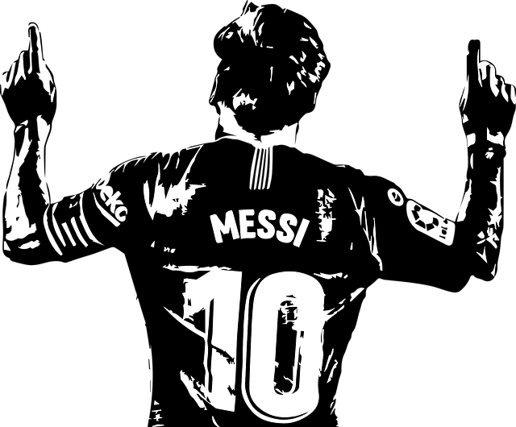

Andrés Messi Cuccittini (Rosario, 24 de junio de 1987), conocido como Leo Messi, es un futbolista argentino que juega como delantero o centrocampista. Jugador histórico del Fútbol Club Barcelona, al que estuvo ligado veinte años, desde 2021 integra el plantel del Paris Saint-Germain de la Ligue 1 de Francia. Es también internacional con la selección de Argentina, equipo del que es capitán.
Nacido y criado en la ciudad de Rosario, a los 13 años se radicó en España, donde el Barcelona accedió a pagar el tratamiento de la enfermedad hormonal que le habían diagnosticado de niño. Después de una rápida progresión por la Academia juvenil del Barcelona, hizo su debut oficial con el primer equipo en octubre de 2004, a los diecisiete años. A pesar de ser propenso a lesiones en los inicios de su carrera, ya en 2006 se estableció como jugador fundamental para el club. Su primera campaña ininterrumpida fue la temporada 2008-09, en la que el Barcelona alcanzó el primer triplete del fútbol español. Por su estilo de juego de pequeño driblador zurdo, pronto se lo comparó con su compatriota Diego Maradona quien, en 2007, lo declaró su «sucesor»
Considerado con frecuencia el mejor jugador del mundo y uno de los mejores de todos los tiempos, es el único futbolista en la historia que ha ganado, entre otras distinciones, siete veces el Balón de Oro, siete premios de la FIFA al mejor jugador del mundo, seis Botas de Oro y dos Balones de Oro de la Copa Mundial de Fútbol. En 2020, se convirtió en el primer futbolista y el primer argentino en recibir un premio Laureus y fue incluido en el Dream Team del Balón de Oro. Con el Barcelona ha ganado 35 títulos, entre ellos, diez de La Liga, cuatro de la Liga de Campeones de la UEFA y siete de la Copa del Rey. Goleador prolífico, ostenta, entre otros, los récords por más goles en una temporada, en un mismo club y en un año calendario. Es, además, el máximo goleador histórico del Barcelona y de la selección argentina, de La Liga, la Supercopa de España, la Supercopa de Europa y el jugador no europeo con más goles en la Liga de Campeones de la UEFA.
